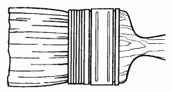
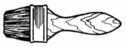
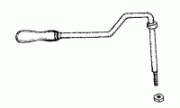
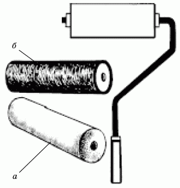
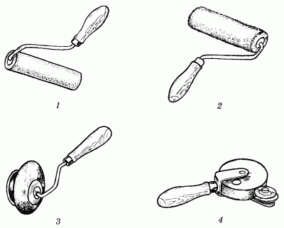
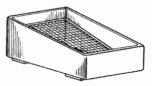
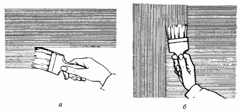
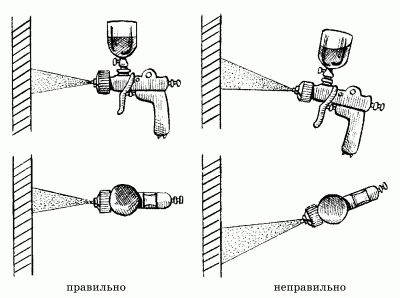

Инструменты.

С чего начинаются малярные работы? Конечно же, с подбора инструментов. Самым главным инструментом маляров по праву называют кисть.
Кисти бывают разными, но самыми лучшими считаются кисти из натурального материала, например из свиной щетины, конского волоса или беличьей шерсти. Используя кисти, изготовленные из свиной щетины, можно добиться отличного качества работы благодаря особенности строения свиного волоса, который на конце раздваивается, что значительно снижает жесткость щетины.
Менее предпочтительными считаются кисти из искусственных материалов. Однако в последнее время огромную популярность завоевали кисти, которые по своим рабочим качествам не уступают природным. Непрофессиональные маляры могут, конечно же, применять в работе любые кисти. Главное, чтобы они были либо новыми, либо отмытыми с помощью уайт-спирита от старой краски. В противном случае слипшаяся щетина с остатками засохшей краски во время проведения малярных работ будет оставлять на стене резко выделяющиеся полосы, и вся окрашенная поверхность станет выглядеть неэстетично.
Начинающим мастерам желательно пользоваться новой кистью. Кроме того, следует запомнить, что после проведения покрасочных работ кисти нужно обязательно опускать в банку с уайт-спиритом для отмокания. Эта мера поможет использовать эту кисть и в дальнейшем.
Для разных видов малярных работ понадобятся несколько различных по форме и размерам кистей. Большие площади обычно окрашивают крупными кистями, а для окрашивания небольших участков, напротив, подойдут маленькие кисти.
В некоторых случаях, например для того, чтобы провести узкую полосу, можно воспользоваться обычной акварельной кисточкой.
Для нанесения на поверхность огрунтовочных составов, масляных и эмалевых красок пользуются ручными кистями. Мягкие плоские кисти подходят для всех видов малярных работ, включая грунтование и нанесение лака. Для размывки стен, нанесения грунтовок и красок пользуются маховыми кистями. Кистями подобного рода можно наносить практически все виды красок, и только для тонкого нанесения краски волосяную часть следует немного обмотать так, как это показано на рис. 7.

Рис. 7. Маховая кисть с обмоткой.
После работы маховой кистью с обмоткой кисть нужно размотать. В противном случае под обмоткой останутся частицы краски, которые потом будет очень трудно удалить.
Флейцевыми кистями производят «финишную», или, иначе говоря, окончательную, отделку окрашенных стен. Именно с помощью этих удобных кистей можно исправить некоторые небольшие дефекты, например восстановить однородность фактуры красочного слоя или снять наплывы (рис. 8).

Рис. 8. Флейцевая кисть.
Новые кисти также нужно предварительно подготовить: тщательно очистить щетину и промыть ее в теплой мыльной воде. Затем кисти следует выдержать около 1 часа в воде. После этого новой кистью следует нанести первый огрунтовочный слой, который не влияет на окончательный результат работы. После этого щетина новой кисти приобретет ту самую форму, которая оптимально подходит для нанесения красочных составов.
Новая кисть довольно часто имеет «тяжелый ход», как часто говорят маляры. После нанесения ею очередного красочного слоя на поверхности стены остаются грубые полосы. Для того чтобы исправить этот недостаток, кисть опускают в уайт-спирит на 10 минут и слегка постукивают ею по кирпичу и бетону. Правильно подготовив кисть, вы не только облегчите работу на данном этапе, но также избавите себя от необходимости покупать в дальнейшем новую.
От использования изношенной кисти (а кисть считается таковой в том случае, если она истерта по длине волоса на 60 %) нужно отказаться. Чаще всего кисть изнашивается при работе с масляными красками. Для того чтобы продлить срок годности кисти, ее нужно периодически опускать в банку с водой, керосином или такой же краской, оставляя там на 10 минут.
Теперь несколько слов о том, как правильно смачивать кисть в краске. Для этого щетину нужно погружать в краску на половину длины, после чего обтереть о внутреннюю сторону банки для удаления излишков краски.
После окончания работ кисть промывают водой (при условии, конечно, что краска клеевая) или опускают на несколько минут в банку с растворителем.
После этого щетину отжимают от воды (или растворителя) и подсушивают в подвешенном состоянии щетиной вниз. После этого щетину следует перевязать ниткой или туго обмотать тканью. Это поможет сохранить конусообразную форму кисти, столь необходимую для работы.
Второй по значению инструмент маляра – это, конечно же, валик. Валиками пользуются для покраски стен после шпаклевания, а также при работе с обоями под покраску.
Некоторые мастера отделочных работ вообще предпочитают применять только валики, а кисточки использовать для покраски тех участков, где валик не пройдет. Большинство маляров также используют валики для окрашивания поверхностей больших площадей, поскольку работа кистью более утомительна и занимает гораздо больше времени.
Начинающему мастеру легче научиться применять валик, чем кисть. Валик состоит из вращающегося по оси ролика, закрепленного на деревянной ручке (рис. 9).

Рис. 9. Ось с рукояткой и гайкой.
Сам ролик обернут специальным, легко впитывающим краску материалом. В качестве такого материала применяют коротковорсную шерстяную ткань, натуральный или искусственный мех, но также можно приобрести валик с губкой из полимерных материалов: все они обладают способностью отлично удерживать краску.
Обычно при покупке валика в магазине в дополнение к этому инструменту покупателю предлагается также приобрести несколько запасных покрытий для валика (рис. 10), которые можно менять по мере использования или в зависимости от вида выполняемых работ.

Рис. 10. Валик: а – с поролоновым покрытием; б – с резиновым покрытием.
Покрасочные работы с помощью валика производятся на широкой и ровной поверхности (не стоит забывать о том, что такие труднодоступные участки, как щели, места соединения пола и стен, места вокруг дверных коробок и прочие, все равно придется закрашивать кистью).
Валики промышленного производства выпускаются с рабочей шириной катка 10–30 см.
В зависимости от назначения существуют следующие типы валиков (рис. 11):
1. Валик с пенопластовым покрытием, предназначенный для окрашивания водными составами.
2. Валик меховой универсальный. Он используется для нанесения лакокрасочных составов в углах окрашиваемых поверхностей.
3. Валик с покрытием из меха, предназначенный для нанесения красок и лака.
4. Филеночный валик.

Рис. 11. Типы валиков: 1 – валик с пенопластовым покрытием; 2 – валик меховой универсальный; 3 – валик с покрытием из меха; 4 – филеночный валик.
Существуют и другие виды валиков, например декоративный накатный валик с коротким синтетическим ворсом, рельефными рисунками и узорами для художественного оформления стен. Можно приобрести и целый комплект: валик, ванночка и отжимная решетка (рис. 12). Использование двух последних приспособлений поможет значительно сократить расход краски.

Рис. 12. Ванночка и отжимная решетка.
Перед началом работы валик смачивают в краске и несколько раз с усилием проводят по отжимной решетке до тех пор, пока с катка не перестанет стекать краска. Затем валик приставляют к стене и несколько раз проводят им по окрашиваемой поверхности в одном и том же месте. Не нужно забывать о том, что валиком красят в разных направлениях.
В конце работы валик очищают от краски так же, как и малярные кисти, – сначала при помощи растворителя, затем отмывают в теплой мыльной воде. После этого инструмент сушат и хранят в сухом прохладном месте.
Окрашивание маховыми кистямиВыше уже упоминалось о том, что для удобства в работе маховые кисти подвязывают. Однако с течением времени волосяная часть кисти истирается, и работать с таким инструментом становится очень трудно. Это вовсе не означает, что в подобном случае нужно обязательно выбросить кисть и купить новую. Если немного отпустить подвязанную часть кисти на требуемую длину, кисть прослужит еще некоторое время. Нужно постараться не очень сильно освобождать шпагат, потому что волосяная часть кисти может значительно поредеть. Во время работы следует периодически переворачивать кисть в руках, в противном случае она примет форму лопаты и красить ею будет не очень удобно.
Сначала следует подготовить окрасочный состав. Затем опустить в него кисть примерно на половину длины волосяной части, а лишнюю краску можно удалить с кисти, слегка постучав ею о края емкости. Наносится краска одинаковыми слоями: сначала на кисть нажимают слегка, затем постепенно увеличивают нажим. Если слишком сильно надавливать на кисть, то краска будет ложиться тонким слоем, а по бокам кисти будут образовываться потоки красящего вещества. При слабом нажиме полосы получатся узкими, но толстыми.
Краску наносят по вертикали или по горизонтали (рис. 13). Можно и совмещать эти два направления. Сначала слой краски наносится горизонтальными штрихами, затем их растушевывают по вертикали. В данном случае очень удобно работать с помощником: тогда не придется красить одну стену два раза. Допустим, один человек наносит только горизонтальные штрихи, а другой растушевывает их вертикальными линиями.

Рис. 13. Окрашивание поверхности стен: а – горизонтальными штрихами; б – вертикальными.
Следует помнить и еще об одном условии качественной и ровной окраски стен. Если, например, две стены были окрашены одним способом, то и заканчивать работу нужно соответственно. Применять иной способ покраски при отделке этого же помещения не следует, иначе стены будут выглядеть по-разному. При желании можно попробовать применить какие-либо нововведения, окрашивая стены другой комнаты.
Окрашивание с помощью пульверизатораПульверизаторы бывают электрические и ручные. По-следними чаще всего пользуются для домашнего ремонта, поскольку более дорогостоящие электрические краскопульты применяются на практике не так часто. Пульверизаторы призваны обеспечить гораздо б€ольшую производительность труда по сравнению с той, которая достигается при использовании валиков и кистей. Но следует учитывать, что вместе с тем пульверизаторы «съедают» и примерно в два раза больше краски.
Пульверизаторы обычно применяются для распыления составов на клеевой и известковой основах, а также для более вязких составов, например приготовленных на масляной основе; воздух же подается при помощи компрессора. Какой бы краскопульт ни использовался в работе, в любом случае нужно предварительно процедить краску через двойной слой марли или мелкоячеистое сито.
Во время работы удочку пульверизатора держат так, чтобы форсунка была направлена перпендикулярно к окрашиваемой поверхности (рис. 14).

Рис. 14. Положение пульверизатора во время окрашивания стен.
Перед началом работы рекомендуется сделать пробную окраску, определив тем самым длину красочного факела и равномерность распыления краски. При правильном распылении длина факела должна составлять около 75—100 см, соответственно, и форсунку следует держать на указанном расстоянии. Не стоит забывать о том, что длина факела меняется от давления воздуха. Рекомендуемое расстояние в 75—100 см получается при давлении в 3–4 атмосферы.
Для получения работы высокого качества многие сначала окрашивают стены кистью или валиком, а второй слой наносят с помощью краскопульта.